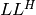
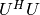

Introduction¶
Overview¶
Elemental is a library for distributed-memory dense linear algebra that is essentially a careful combination of the following:
- A PLAPACK-like framework of matrix distributions that are trivial for users to redistribute between.
- A FLAME approach to tracking submatrices within (blocked) algorithms.
- Element-wise distribution of matrices. One of the major benefits to this approach is the much more convenient handling of submatrices, relative to block distribution schemes.
Just like ScaLAPACK and PLAPACK, Elemental’s primary goal is in extending BLAS and LAPACK-like functionality into distributed-memory environments. The following routines are already supported by Elemental:
- Hermitian eigenvalue problems
- Skew-Hermitian eigenvalue problems
- Generalized Hermitian-definite eigenvalue problems
- Hermitian tridiagonalization
- Cholesky ( or ) factorization
 factorization (with or without row pivoting)
factorization (with or without row pivoting) and
and  factorization (without pivoting)
factorization (without pivoting) and
and  factorization
factorization- Triangular inversion
- Gaussian elimination
- All of the Level 3 BLAS and the vast majority of Level 1 and Level 2 routines
Though Elemental already contains high-quality implementations of a large portion of BLAS and LAPACK-like routines, there are a few important reasons why ScaLAPACK or PLAPACK might be more appropriate:
- Elemental does not yet support SVD’s or non-Hermitian eigenvalue problems: both PLAPACK and ScaLAPACK have SVD implementations, but only ScaLAPACK supports non-Hermitian eigenvalue problems.
- Elemental does not yet provide routines for narrowly banded linear systems, though ScaLAPACK does.
- Some applications exploit the block distribution format used by PLAPACK and ScaLAPACK in order to increase the efficiency of matrix construction. Though it is clearly possible to redistribute the matrix into an element-wise distribution format after construction, this might add an unnecessary level of complexity.
Dependencies¶
- Functioning C++03 and ANSI C compilers.
- A working MPI implementation.
- BLAS and LAPACK (ideally version 3.3 or greater) implementations. If a sufficiently up-to-date LAPACK implementation is not provided, then a working F90 compiler is required in order to build Elemental’s eigensolvers (the tridiagonal eigensolver, PMRRR, requires recent LAPACK routines).
- CMake (version 2.8.5 or later).
Elemental should successfully build on nearly every platform, as it has been verified to build on most major desktop platforms (including Linux, Mac OS X, Microsoft Windows, and Cygwin), as well as a wide variety of Linux clusters (including Blue Gene/P) and, with some minor modifications, on Intel’s SCC research chip.
License and Copyright¶
All files distributed with Elemental are made available under the New BSD license. The vast majority of source files contain the following copyright notice:
Copyright (c) 2009-2011, Jack Poulson
All rights reserved.
This file is part of Elemental.
Redistribution and use in source and binary forms, with or without
modification, are permitted provided that the following conditions are met:
- Redistributions of source code must retain the above copyright notice,
this list of conditions and the following disclaimer.
- Redistributions in binary form must reproduce the above copyright notice,
this list of conditions and the following disclaimer in the documentation
and/or other materials provided with the distribution.
- Neither the name of the owner nor the names of its contributors
may be used to endorse or promote products derived from this software
without specific prior written permission.
THIS SOFTWARE IS PROVIDED BY THE COPYRIGHT HOLDERS AND CONTRIBUTORS "AS IS"
AND ANY EXPRESS OR IMPLIED WARRANTIES, INCLUDING, BUT NOT LIMITED TO, THE
IMPLIED WARRANTIES OF MERCHANTABILITY AND FITNESS FOR A PARTICULAR PURPOSE
ARE DISCLAIMED. IN NO EVENT SHALL THE COPYRIGHT HOLDER OR CONTRIBUTORS BE
LIABLE FOR ANY DIRECT, INDIRECT, INCIDENTAL, SPECIAL, EXEMPLARY, OR
CONSEQUENTIAL DAMAGES (INCLUDING, BUT NOT LIMITED TO, PROCUREMENT OF
SUBSTITUTE GOODS OR SERVICES; LOSS OF USE, DATA, OR PROFITS; OR BUSINESS
INTERRUPTION) HOWEVER CAUSED AND ON ANY THEORY OF LIABILITY, WHETHER IN
CONTRACT, STRICT LIABILITY, OR TORT (INCLUDING NEGLIGENCE OR OTHERWISE)
ARISING IN ANY WAY OUT OF THE USE OF THIS SOFTWARE, EVEN IF ADVISED OF THE
POSSIBILITY OF SUCH DAMAGE.
There are two important exceptions in the main library:
- The AxpyInterface for building distributed matrices is based upon contributions from Martin Schatz and the copyright is shared with The University of Texas at Austin.
- The code for computing Householder reflectors is based off of LAPACK and is also copyright The University of Tennessee.
In addition, two libraries that Elemental depends upon are included in the external/ folder:
- The parallel tridiagonal eigensolver, PMRRR, is written by Matthias Petschow and Paolo Bientinesi and is copyright RWTH Aachen University.
- The parallel linear congruential pseudo-random number generator, PLCG, is copyright Jack Poulson, Lexing Ying, and The University of Texas at Austin.